|
a) Sea D el punto medio del lado BC del triángulo ABC,
con el ángulo A agudo, con circuncentro O. Si la circunferencia
con b) ¿Cómo es el resultado si A es recto? c) ¿Cómo es el resultado si A es obtuso? |
|
Propuesto por Paul Yiu
|
Solución de Francisco Javier García Capitán
| a) Si el ángulo A es agudo, la construcción es la siguiente: |
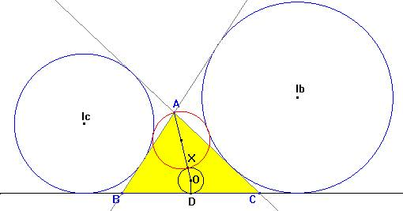
La solución de este apartado consta de dos partes:
1. Para la primera parte, sea R el radio de la circunferencia circunscrita. Tenemos
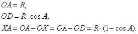
Teniendo en cuenta el teorema de los senos generalizado,
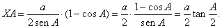
En el último paso hemos hecho uso de las relaciones:
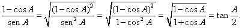
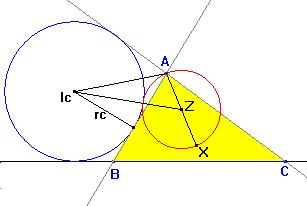
2. Comprobaremos ahora que la circunferencia con diámetro AX es tangente a la circunferencia exinscrita (Ic). Sean Z y r el centro y el radio de la circunferencia con diámetro AX.
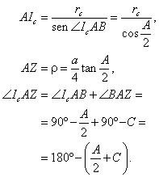
Aplicando el teorema del coseno al triángulo IcAZ,
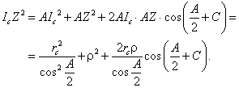
Para que las circunferencias (Ic) y (Z) sean tangentes debe ser
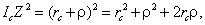
Las dos expresiones serán iguales si y solo si
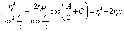
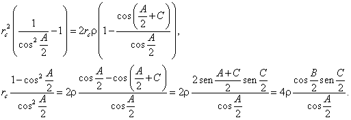
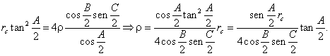
La fórmula quedará demostrada si vemos que
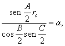
ya que entonces r tendrá coincidirá con el radio de la circunferencia con diámetro AX.
Para comprobar esta fórmula sustituirmos cada término por su valor:
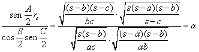
| b) Si el ángulo A es recto. |
El caso de que A es recto puede derivarse del caso del triángulo agudo usando un argumento de continuidad.
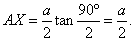
En efecto, la circunferencia con diámetro BC contiene al punto A, por ser recto el ángulo A.
| b) Si el ángulo A es obtuso. |
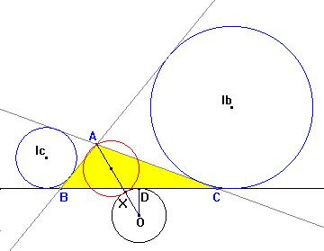
Si el ángulo A es obtuso, la circunferencia descrita en el enunciado no es tangente, y su radio no tiene la misma fórmula.En efecto, si suponemos, como antes, que X está en el segmento OA, tenemos
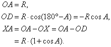
Teniendo en cuenta el teorema de los senos generalizado,
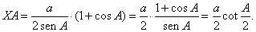
El último paso lo podemos razonar con las igualdades:
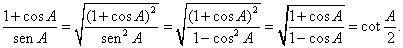
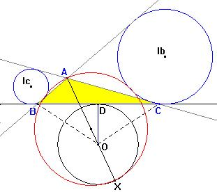
El cambio de signo sugiere que debemos considerar en este caso el punto X no en el segmento OA, sino en la prolongación de AO. En efecto, la figura de Cabri muestra que en este caso sí son tangentes, y además se cumpliría la fórmula
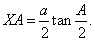
A modo de resumen, podemos decir entonces que esta fórmula es válida para cualquier valor del ángulo A.